78 typov infobarov78 infobar designs78 Infoleisten-Varianten78 вариантов инфобаров
Objavte originálne typy infobarov FullHDGlass. Kliknutím na náhľad otvoríte celú Full HD snímku prijímača. Medzi snímkami sa pohybujte šípkami.Discover the original FullHDGlass infobar designs. Select a preview to open the complete Full HD receiver screenshot. Use arrows to browse.Entdecken Sie die Original-Infoleisten von FullHDGlass. Wählen Sie eine Vorschau, um den vollständigen Full-HD-Receiver-Screenshot zu öffnen. Blättern Sie mit den Pfeiltasten.Откройте оригинальные варианты инфобаров FullHDGlass. Нажмите на изображение для просмотра полного снимка ресивера в Full HD. Используйте стрелки для навигации.

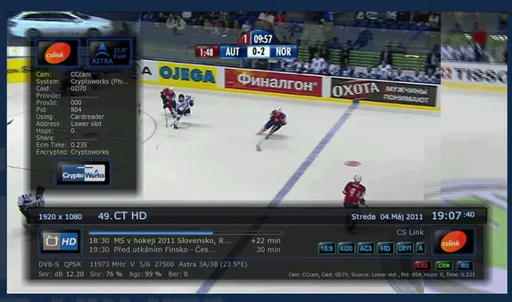

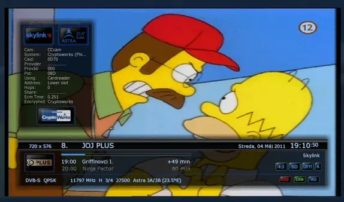


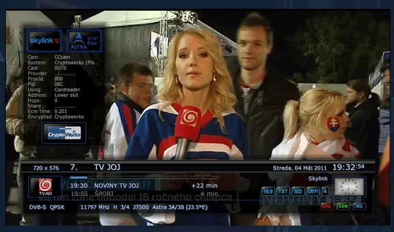

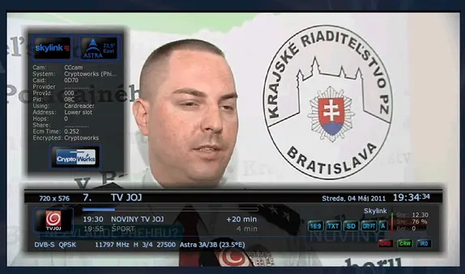

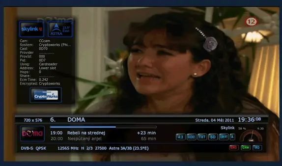

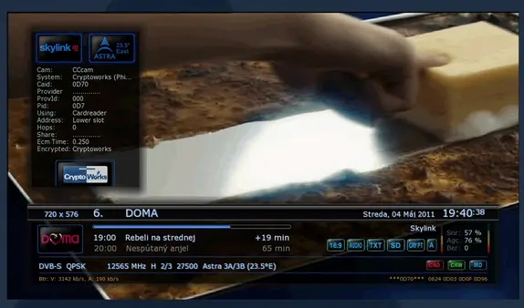

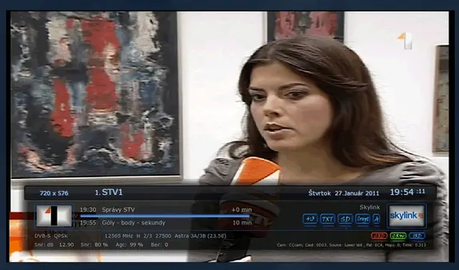


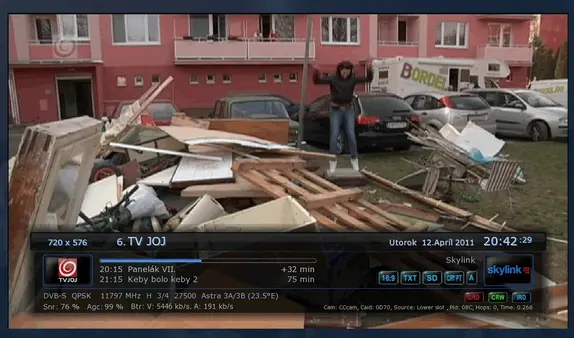


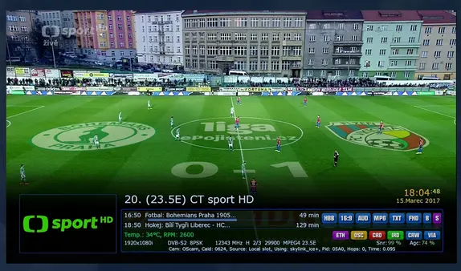

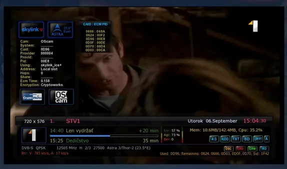


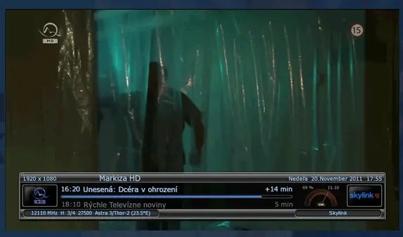

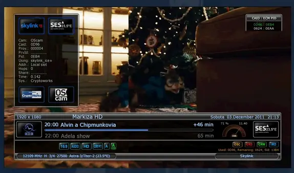


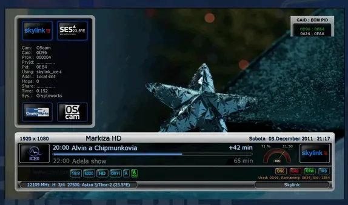


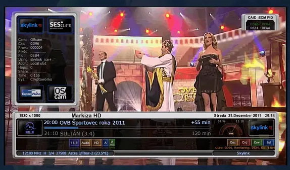


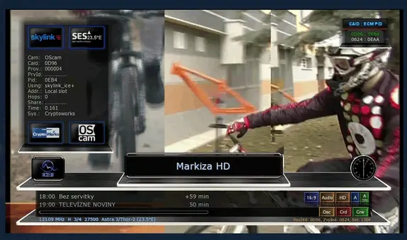


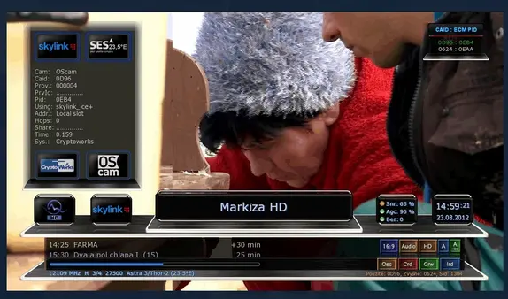


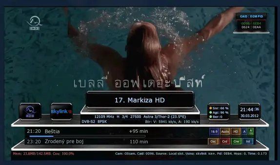


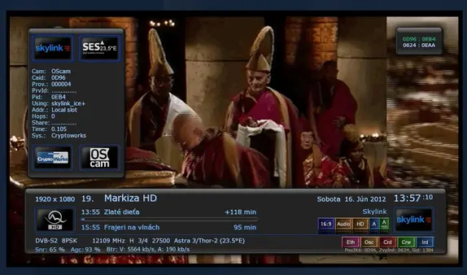


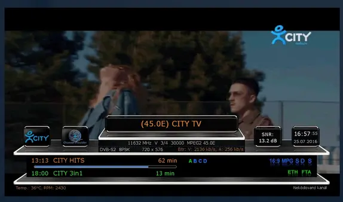

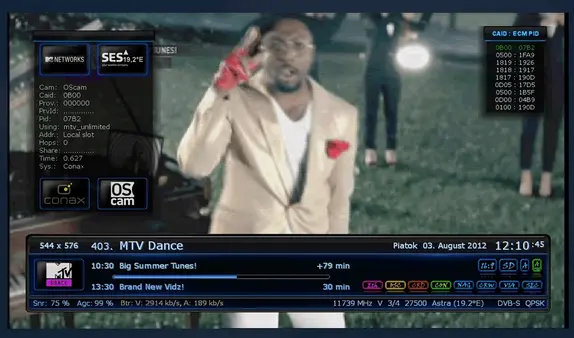

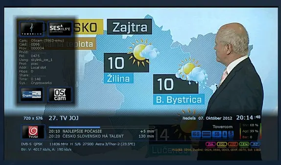


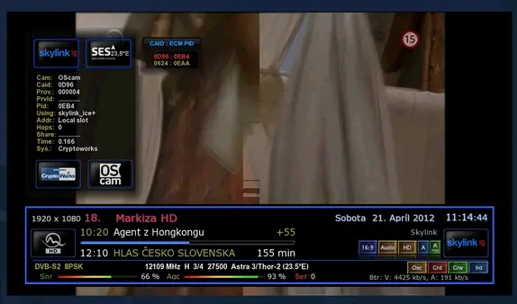


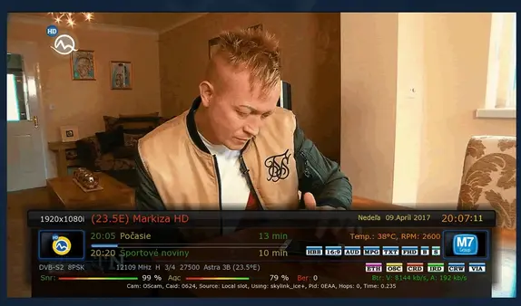


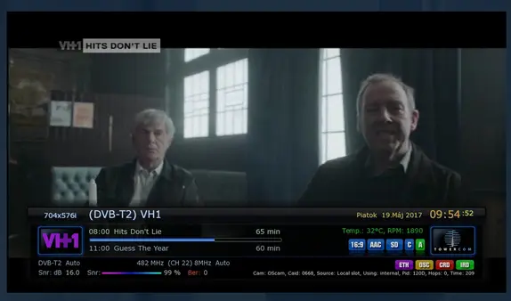


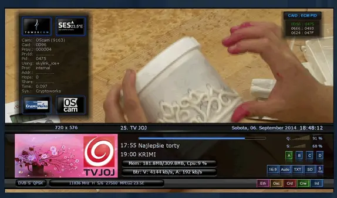

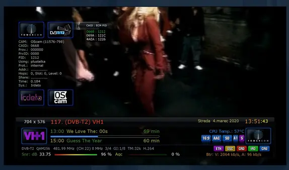


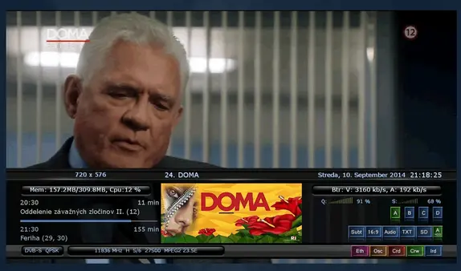


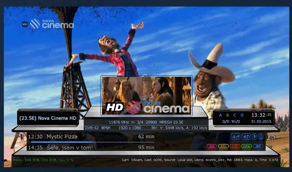


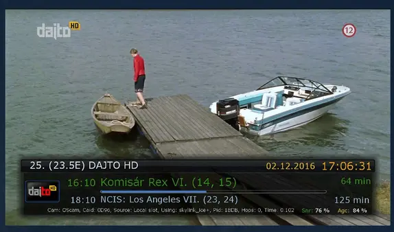


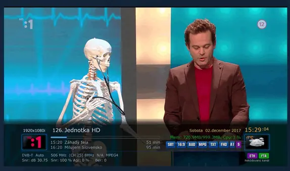

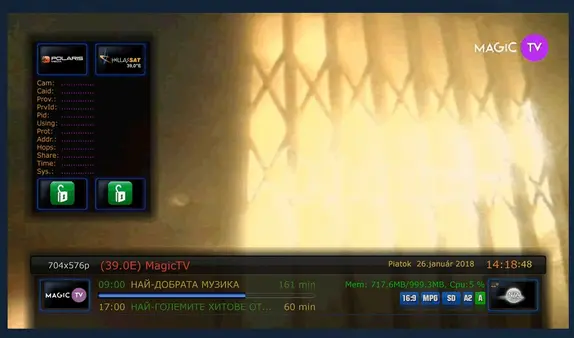


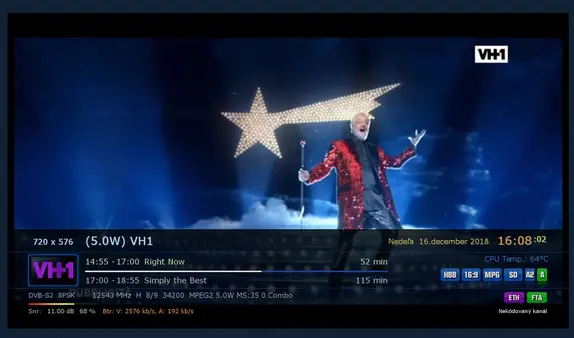

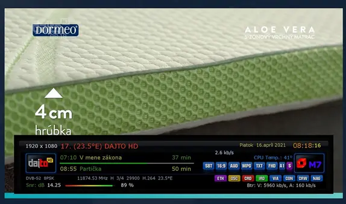


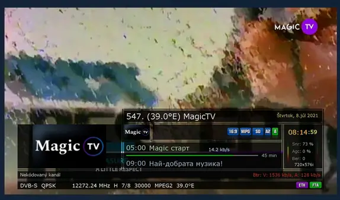


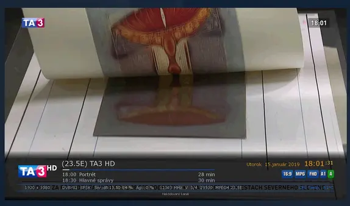

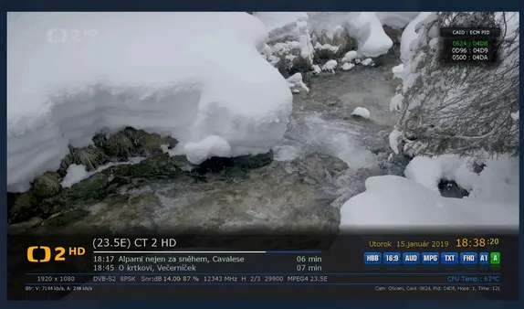


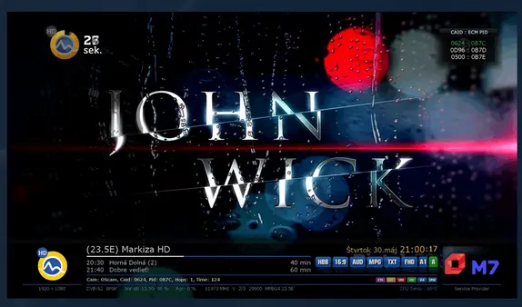

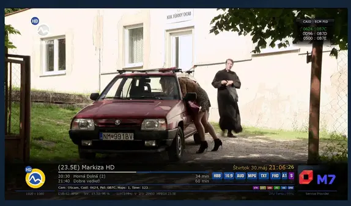

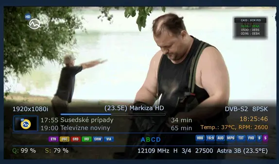

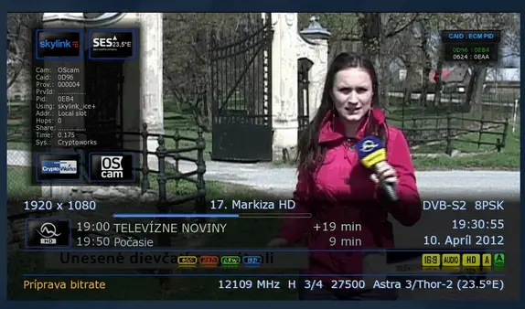